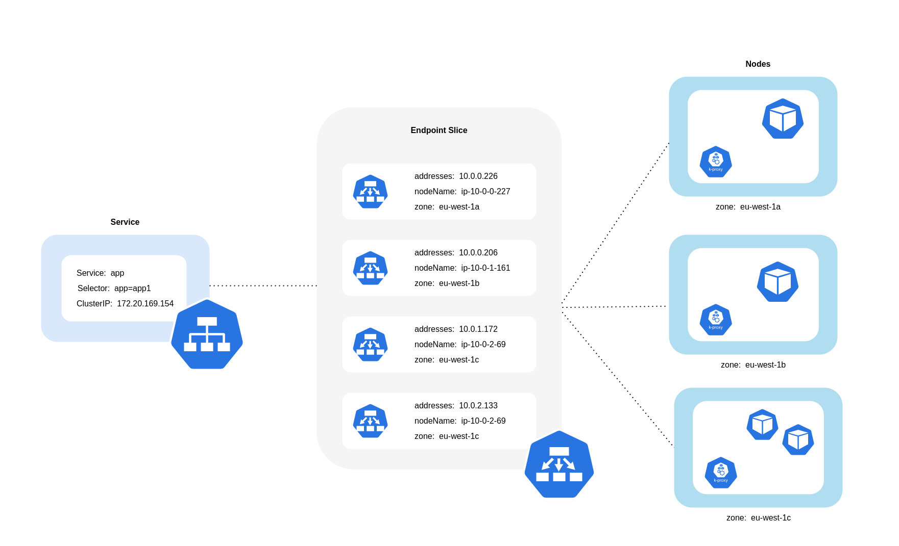
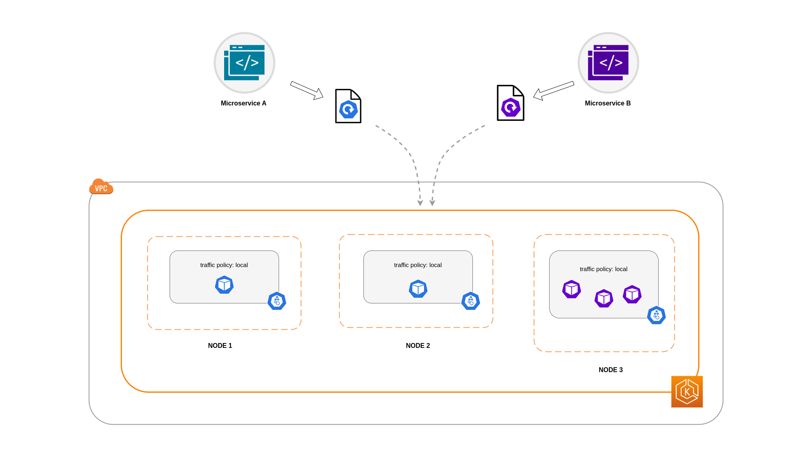
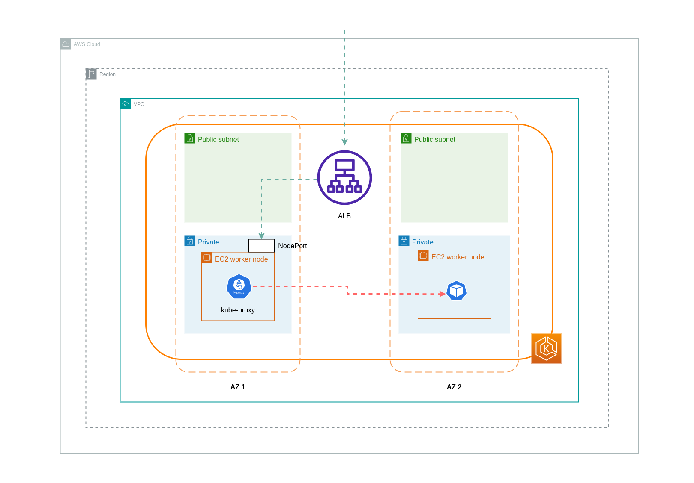
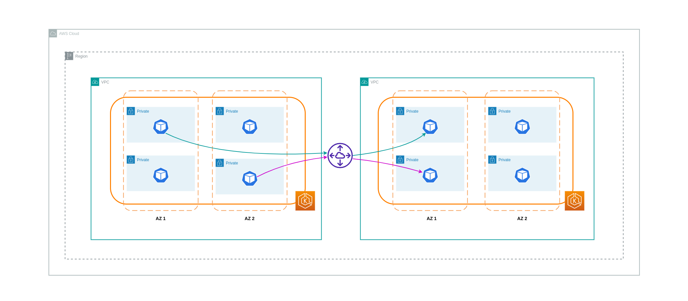
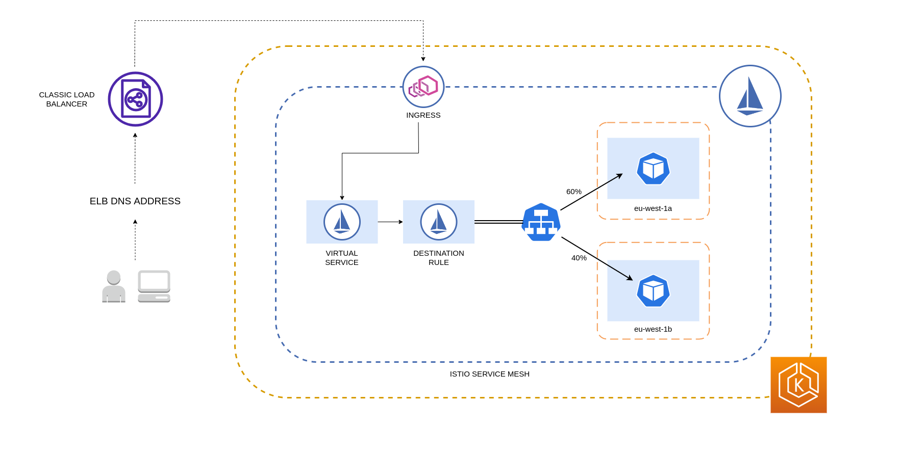
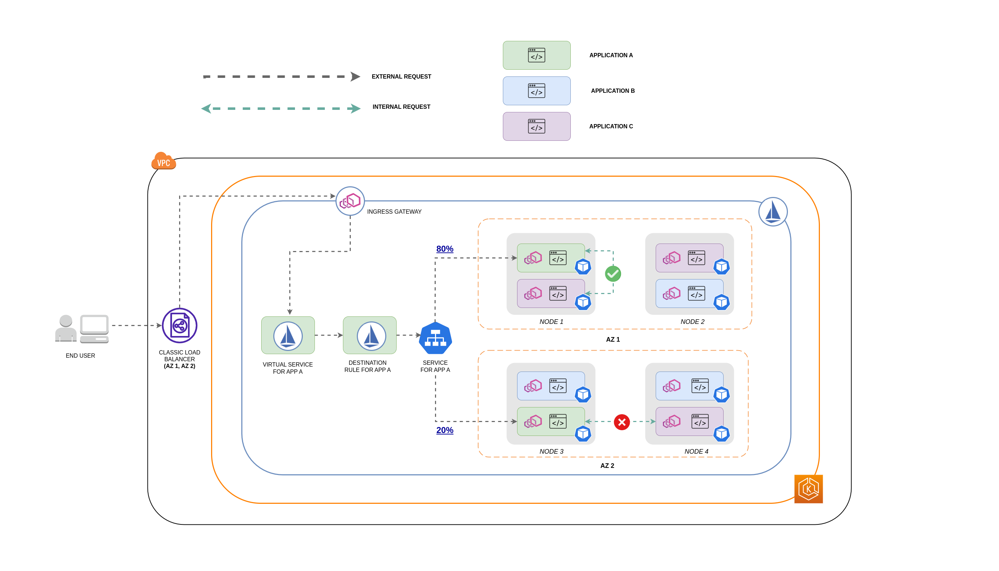
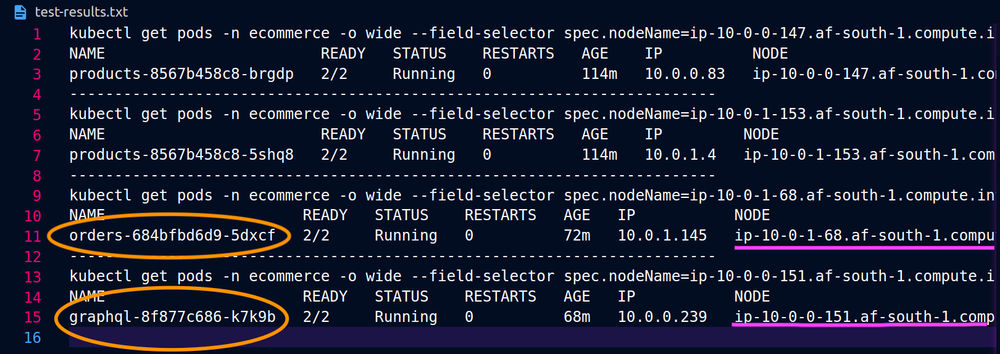

成本优化 - 网络¶
为实现弹性和容错能力，架构高可用性 (HA) 系统是最佳实践。在实践中，这意味着将工作负载和底层基础设施分布在给定 AWS 区域的多个可用区 (AZ) 中。确保这些特性在您的 Amazon EKS 环境中得到实现，将提高整个系统的可靠性。结合这一点，您的 EKS 环境可能还包含各种构造 (如 VPC)、组件 (如 ELB) 和集成 (如 ECR 和其他容器注册表)。
高可用系统和其他特定于用例的组件的组合可能会在数据传输和处理方面发挥重大作用。这反过来会影响由数据传输和处理而产生的成本。
下面详述的做法将帮助您设计和优化 EKS 环境，以实现不同领域和用例的成本效益。
Pod 到 Pod 通信¶
根据您的设置情况，Pod 之间的网络通信和数据传输可能会对运行 Amazon EKS 工作负载的总体成本产生重大影响。本节将介绍不同的概念和方法来减少与 Pod 间通信相关的成本，同时考虑高可用 (HA) 架构、应用程序性能和弹性。
限制流量在可用区内¶
频繁的跨区域出口流量 (在 AZ 之间分布的流量) 可能会对网络相关成本产生重大影响。以下是一些控制 EKS 集群中 Pod 之间跨区域流量量的策略。
如果您想了解 Pod 之间跨区域流量的数据量 (如以字节为单位的传输数据量)，请参阅此文章。
使用拓扑感知路由 (前称为拓扑感知提示)

使用拓扑感知路由时，了解 Service、EndpointSlice 和 kube-proxy 在路由流量时是如何协同工作很重要。如上图所示，Service 是接收目标为您的 Pod 的流量的稳定网络抽象层。创建 Service 时，会创建多个 EndpointSlice。每个 EndpointSlice 都有一个包含 Pod 地址子集的端点列表，以及它们所在的节点和任何其他拓扑信息。kube-proxy 是在集群的每个节点上运行的 daemonset，也承担内部路由的角色，但它的路由是基于从创建的 EndpointSlice 中获取的信息。
当拓扑感知路由 在 Kubernetes Service 上启用并实现时，EndpointSlice 控制器将按比例将端点分配到集群所跨越的不同区域。对于每个端点，EndpointSlice 控制器还会设置一个区域 提示。提示 描述了端点应该为哪个区域提供服务。然后 kube-proxy 将根据应用的 提示 将流量从一个区域路由到一个端点。
下图显示了 EndpointSlice 如何以这样一种方式组织，使得 kube-proxy 可以根据流量的区域起点知道应该将其路由到哪个目的地。如果没有提示，就不会有这种分配或组织，流量将被代理到不同的区域目的地，而不管它来自哪里。

在某些情况下，EndpointSlice 控制器可能会为不同区域应用一个 提示，这意味着该端点可能最终会为来自不同区域的流量提供服务。这样做的原因是尝试在不同区域之间保持流量的均匀分布。
以下是启用 拓扑感知路由 的 Service 的代码片段。
apiVersion: v1
kind: Service
metadata:
name: orders-service
namespace: ecommerce
annotations:
service.kubernetes.io/topology-mode: Auto
spec:
selector:
app: orders
type: ClusterIP
ports:
- protocol: TCP
port: 3003
targetPort: 3003
下面的屏幕截图显示了 EndpointSlice 控制器成功为在 AZ eu-west-1a 中运行的 Pod 副本的端点应用了一个提示。

Note
需要注意的是，拓扑感知路由仍处于 beta 阶段。此外，当工作负载广泛且均匀地分布在集群拓扑中时，此功能的可预测性更高。因此，强烈建议将其与提高应用程序可用性的调度约束 (如 pod 拓扑分布约束) 结合使用。
使用自动缩放器： 将节点供应到特定的 AZ
我们强烈建议 在多个 AZ 中运行您的工作负载，以提高环境的高可用性。这可以提高应用程序的可靠性，特别是在某个 AZ 出现问题的情况下。如果您愿意牺牲可靠性来降低网络相关成本，您可以将节点限制在单个 AZ 中。
要在同一 AZ 中运行所有 Pod，可以在同一 AZ 中供应工作节点，或者在同一 AZ 中运行的工作节点上调度 Pod。要在单个 AZ 中供应节点，请使用 Cluster Autoscaler (CA) 定义一个属于同一 AZ 的子网的节点组。对于 Karpenter, 使用 "topology.kubernetes.io/zone" 并指定您希望创建工作节点的 AZ。例如，下面的 Karpenter 供应器代码片段将在 us-west-2a AZ 中供应节点。
Karpenter
apiVersion: karpenter.sh/v1alpha5
kind: Provisioner
metadata:
name: single-az
spec:
requirements:
- key: "topology.kubernetes.io/zone"
operator: In
values: ["us-west-2a"]
Cluster Autoscaler (CA)
apiVersion: eksctl.io/v1alpha5
kind: ClusterConfig
metadata:
name: my-ca-cluster
region: us-east-1
version: "1.21"
availabilityZones:
- us-east-1a
managedNodeGroups:
- name: managed-nodes
labels:
role: managed-nodes
instanceType: t3.medium
minSize: 1
maxSize: 10
desiredCapacity: 1
...
使用 Pod 分配和节点亲和性
或者，如果您有在多个 AZ 中运行的工作节点，每个节点都会有标签 topology.kubernetes.io/zone,其值为其所在的 AZ (如 us-west-2a 或 us-west-2b)。您可以使用 nodeSelector 或 nodeAffinity 将 Pod 调度到单个 AZ 中的节点。例如，以下清单文件将在 AZ us-west-2a 中运行的节点上调度 Pod。
apiVersion: v1
kind: Pod
metadata:
name: nginx
labels:
env: test
spec:
nodeSelector:
topology.kubernetes.io/zone: us-west-2a
containers:
- name: nginx
image: nginx
imagePullPolicy: IfNotPresent
限制流量在节点内¶
有些情况下，仅在区域级别限制流量是不够的。除了降低成本外，您可能还需要降低某些频繁相互通信的应用程序之间的网络延迟。为了实现最佳网络性能和降低成本，您需要一种方式来限制流量在特定节点内。例如，微服务 A 应该始终与节点 1 上的微服务 B 通信，即使在高可用 (HA) 设置中也是如此。如果微服务 A 在节点 1 上与微服务 B 在节点 2 上通信，可能会对这种性能要求较高的应用程序产生负面影响，特别是如果节点 2 位于不同的 AZ 时。
使用 Service 内部流量策略
为了限制 Pod 网络流量在节点内，您可以使用 Service 内部流量策略。默认情况下，发送到工作负载 Service 的流量将在不同生成的端点之间随机分布。因此，在高可用架构中，这意味着来自微服务 A 的流量可能会进入任何一个微服务 B 的副本，无论它在哪个节点上。但是，如果将 Service 的内部流量策略设置为 Local,流量将被限制在流量起源节点上的端点。此策略规定了专门使用节点本地端点。这意味着，该工作负载的网络流量相关成本将低于在整个集群范围内分布的情况。此外，延迟也会降低，从而提高应用程序的性能。
Note
需要注意的是，此功能无法与 Kubernetes 中的拓扑感知路由结合使用。

下面是设置 Service 内部流量策略 的代码片段。
apiVersion: v1
kind: Service
metadata:
name: orders-service
namespace: ecommerce
spec:
selector:
app: orders
type: ClusterIP
ports:
- protocol: TCP
port: 3003
targetPort: 3003
internalTrafficPolicy: Local
为了避免由于流量丢弃而导致应用程序出现意外行为，您应该考虑以下方法：
在此示例中，您有 2 个微服务 A 的副本和 3 个微服务 B 的副本。如果微服务 A 的副本分布在节点 1 和 2 上，而微服务 B 的所有 3 个副本都在节点 3 上，那么由于 Local 内部流量策略，它们将无法通信。当没有可用的节点本地端点时，流量将被丢弃。

如果微服务 B 在节点 1 和 2 上各有 2 个副本，那么 graphql 和 orders 之间就会有通信。但您仍会有一个孤立的微服务 B 副本，没有任何对等副本可以与之通信。

Note
在某些情况下，上图所示的孤立副本可能不会引起关注，如果它仍然可以用于服务外部传入的请求。
将 Service 内部流量策略与拓扑分布约束结合使用
将 内部流量策略 与 拓扑分布约束 结合使用可以确保在不同节点上为通信的微服务部署正确数量的副本。
apiVersion: apps/v1
kind: Deployment
metadata:
name: express-test
spec:
replicas: 6
selector:
matchLabels:
app: express-test
template:
metadata:
labels:
app: express-test
tier: backend
spec:
topologySpreadConstraints:
- maxSkew: 1
topologyKey: "topology.kubernetes.io/zone"
whenUnsatisfiable: ScheduleAnyway
labelSelector:
matchLabels:
app: express-test
将 Service 内部流量策略与 Pod 亲和性规则结合使用
另一种方法是在使用 Service 内部流量策略时使用 Pod 亲和性规则。通过 Pod 亲和性，您可以影响调度器将某些频繁通信的 Pod 共存。通过对某些 Pod 应用严格的调度约束 (requiredDuringSchedulingIgnoredDuringExecution),在调度器将 Pod 放置在节点上时，这将为 Pod 共存提供更好的结果。
apiVersion: apps/v1
kind: Deployment
metadata:
name: graphql
namespace: ecommerce
labels:
app.kubernetes.io/version: "0.1.6"
...
spec:
serviceAccountName: graphql-service-account
affinity:
podAffinity:
requiredDuringSchedulingIgnoredDuringExecution:
- labelSelector:
matchExpressions:
- key: app
operator: In
values:
- orders
topologyKey: "kubernetes.io/hostname"
负载均衡器到 Pod 通信¶
EKS 工作负载通常由负载均衡器前置，负载均衡器将流量分发到 EKS 集群中的相关 Pod。您的架构可能包括内部和/或外部负载均衡器。根据您的架构和网络流量配置，负载均衡器与 Pod 之间的通信可能会对数据传输费用产生重大影响。
您可以使用 AWS Load Balancer Controller 自动管理 ELB 资源 (ALB 和 NLB) 的创建。在这种设置中，您产生的数据传输费用将取决于网络流量的路径。AWS Load Balancer Controller 支持两种网络流量模式：实例模式 和 ip 模式。
使用 实例模式 时，每个节点上都会打开一个 NodePort。负载均衡器将在节点之间均匀代理流量。如果目标 Pod 运行在接收流量的节点上，则不会产生数据传输成本。但是，如果目标 Pod 位于不同的节点并且在与接收流量的 NodePort 不同的 AZ 中，那么从 kube-proxy 到目标 Pod 将会有额外的网络跳跃。在这种情况下，将产生跨 AZ 数据传输费用。由于流量在节点之间均匀分布，很可能会产生与从 kube-proxy 到相关目标 Pod 的跨区域网络跳跃相关的额外数据传输费用。
下图描绘了一个网络路径，流量从负载均衡器流向 NodePort，随后从 kube-proxy 流向位于不同 AZ 中的单独节点上的目标 Pod。这是 实例模式 设置的一个示例。

使用 ip 模式 时，网络流量直接从负载均衡器代理到目标 Pod。因此，这种方法不会产生数据传输费用。
Tip
建议将您的负载均衡器设置为 ip 流量模式 以降低数据传输费用。对于这种设置，还需要确保您的负载均衡器部署在 VPC 中的所有子网上。
下图描绘了网络路径，流量在 ip 模式 下从负载均衡器流向 Pod。

从容器注册表传输数据¶
Amazon ECR¶
传输到 Amazon ECR 私有注册表是免费的。区域内数据传输不收费，但传输到互联网和跨区域的数据传输将按互联网数据传输费率在传输的两端收费。
您应该利用 ECR 内置的 镜像复制功能 将相关容器镜像复制到与您的工作负载相同的区域。这样，复制将被收费一次，而所有相同区域 (区域内) 的镜像拉取都将免费。
您还可以通过 使用 Interface VPC Endpoints 连接到区域内的 ECR 存储库 来进一步降低从 ECR 拉取镜像 (数据传输出) 相关的数据传输成本。连接到 ECR 的公共 AWS 端点 (通过 NAT 网关和互联网网关) 的替代方法将产生更高的数据处理和传输成本。下一节将更详细地介绍降低工作负载与 AWS 服务之间的数据传输成本。
如果您运行的工作负载使用特别大的镜像，您可以构建自己的自定义 Amazon Machine Images (AMI)，其中预先缓存了容器镜像。这可以减少从容器注册表到 EKS 工作节点的初始镜像拉取时间和潜在数据传输成本。
传输到互联网和 AWS 服务¶
将 Kubernetes 工作负载与其他 AWS 服务或第三方工具和平台通过互联网集成是一种常见做法。用于路由流量到相关目的地的底层网络基础设施可能会影响数据传输过程中产生的成本。
使用 NAT 网关¶
NAT 网关是执行网络地址转换 (NAT) 的网络组件。下图描绘了 EKS 集群中的 Pod 与其他 AWS 服务 (Amazon ECR、DynamoDB 和 S3) 以及第三方平台通信的情况。在此示例中，Pod 运行在不同 AZ 的私有子网中。要发送和接收来自互联网的流量，需要在一个 AZ 的公共子网中部署 NAT 网关，允许具有私有 IP 地址的任何资源共享一个公共 IP 地址来访问互联网。这个 NAT 网关反过来与互联网网关组件通信，允许数据包被发送到最终目的地。

在使用 NAT 网关进行此类用例时，您可以通过在每个 AZ 中部署一个 NAT 网关来最小化数据传输成本。这样，路由到互联网的流量将通过同一 AZ 中的 NAT 网关，避免了跨 AZ 数据传输。但是，即使您可以节省跨 AZ 数据传输的成本，这种设置的含义是您的架构中将增加一个 NAT 网关的成本。
下图描绘了这种推荐方法。

使用 VPC 端点¶
为了进一步降低此类架构的成本，您应该使用 VPC 端点 在您的工作负载与 AWS 服务之间建立连接。VPC 端点允许您从 VPC 内部访问 AWS 服务，而无需数据/网络数据包穿越互联网。所有流量都保留在 AWS 网络内部。有两种类型的 VPC 端点：Interface VPC 端点 (由许多 AWS 服务支持) 和 Gateway VPC 端点 (仅由 S3 和 DynamoDB 支持)。
Gateway VPC 端点
使用 Gateway VPC 端点不会产生每小时或数据传输费用。使用 Gateway VPC 端点时，需要注意的是它们无法跨 VPC 边界扩展。它们不能在 VPC 对等、VPN 网络或通过 Direct Connect 中使用。
Interface VPC 端点
VPC 端点有 每小时费用,并且根据 AWS 服务的不同，可能还会有通过底层 ENI 进行数据处理的额外费用。为了降低与 Interface VPC 端点相关的跨 AZ 数据传输成本，您可以在每个 AZ 中创建一个 VPC 端点。您可以在同一 VPC 中创建多个指向同一 AWS 服务的 VPC 端点。
下图显示了 Pod 通过 VPC 端点与 AWS 服务通信。

VPC 之间的数据传输¶
在某些情况下，您可能在不同的 VPC 中 (位于同一 AWS 区域内) 有需要相互通信的工作负载。这可以通过允许流量穿越公共互联网，通过连接到各自 VPC 的互联网网关来实现。可以通过在公共子网中部署基础设施组件 (如 EC2 实例、NAT 网关或 NAT 实例) 来启用此类通信。但是，包含这些组件的设置将产生处理/传输进出 VPC 的数据的费用。如果流量在不同 VPC 之间移动时跨越了 AZ，那么还会产生额外的数据传输费用。下图描绘了一个使用 NAT 网关和互联网网关在不同 VPC 中的工作负载之间建立通信的设置。

VPC 对等连接¶
为了降低此类用例的成本，您可以使用 VPC 对等。使用 VPC 对等连接，在同一 AZ 内保持的网络流量不会产生数据传输费用。如果流量跨越 AZ，将会产生费用。尽管如此，VPC 对等方法仍被推荐用于在同一 AWS 区域内不同 VPC 中的工作负载之间进行成本效益较高的通信。但是，需要注意的是，VPC 对等主要有效于 1：1 VPC 连接，因为它不允许传递网络。
下图是工作负载通过 VPC 对等连接进行通信的高级表示。

传递网络连接¶
如上一节所述，VPC 对等连接不允许传递网络连接。如果您想连接 3 个或更多 VPC，并且需要传递网络，那么您应该使用 Transit Gateway (TGW)。这将使您能够克服 VPC 对等的限制或在多个 VPC 之间进行多个 VPC 对等连接所带来的运营开销。您需要按小时付费，并为发送到 TGW 的数据付费。通过 TGW 流动的跨 AZ 流量不会产生目的地费用。
下图显示了在同一 AWS 区域内不同 VPC 中的工作负载之间，跨 AZ 流量流经 TGW。
使用服务网格¶
服务网格提供了强大的网络功能，可用于降低 EKS 集群环境中的网络相关成本。但是，如果您采用服务网格，您应该仔细考虑它将为您的环境引入的操作任务和复杂性。
限制流量在可用区内¶
使用 Istio 的区域加权分布
Istio 允许您在路由发生后对流量应用网络策略。这是使用 Destination Rules 如 locality weighted distribution 实现的。使用此功能，您可以控制从某个来源到某个目的地的流量权重 (以百分比表示)。此流量的来源可以是外部 (或公共) 负载均衡器或集群内的 Pod。当所有 Pod 端点都可用时，区域将根据加权轮询负载均衡算法进行选择。如果某些端点不健康或不可用，区域权重将自动调整 以反映可用端点的变化。
Note
在实施区域加权分布之前，您应该先了解您的网络流量模式以及 Destination Rule 策略可能对您的应用程序行为产生的影响。因此，拥有分布式跟踪机制 (如 AWS X-Ray 或 Jaeger) 非常重要。
上述 Istio Destination Rules 也可以应用于管理从负载均衡器到 EKS 集群中的 Pod 的流量。可以将区域加权分布规则应用于从高可用负载均衡器 (特别是 Ingress Gateway) 接收流量的 Service。这些规则允许您根据流量的区域来源 (在本例中为负载均衡器) 控制流量流向何处的比例。如果配置正确，与负载均衡器在不同 AZ 中的 Pod 副本之间均匀或随机分发流量相比，将产生更少的出口跨区域流量。
下面是 Istio 中 Destination Rule 资源的代码块示例。如下所示，此资源为来自 eu-west-1 区域 3 个不同 AZ 的传入流量指定了加权配置。这些配置声明，从给定 AZ 传入的大部分流量 (本例中为 70%) 应该被代理到与其来源相同的 AZ 中的目的地。
apiVersion: networking.istio.io/v1beta1
kind: DestinationRule
metadata:
name: express-test-dr
spec:
host: express-test.default.svc.cluster.local
trafficPolicy:
loadBalancer:
localityLbSetting:
distribute:
- from: eu-west-1/eu-west-1a/
to:
"eu-west-1/eu-west-1a/*": 70
"eu-west-1/eu-west-1b/*": 20
"eu-west-1/eu-west-1c/*": 10
- from: eu-west-1/eu-west-1b/*
to:
"eu-west-1/eu-west-1a/*": 20
"eu-west-1/eu-west-1b/*": 70
"eu-west-1/eu-west-1c/*": 10
- from: eu-west-1/eu-west-1c/*
to:
"eu-west-1/eu-west-1a/*": 20
"eu-west-1/eu-west-1b/*": 10
"eu-west-1/eu-west-1c/*": 70**
connectionPool:
http:
http2MaxRequests: 10
maxRequestsPerConnection: 10
outlierDetection:
consecutiveGatewayErrors: 1
interval: 1m
baseEjectionTime: 30s
Note
可以分配给目的地的最小权重为 1%。这样做的原因是为了在主要目的地的端点不健康或不可用时保持故障转移区域和区域。
下图描绘了一种情况，其中在 eu-west-1 区域有一个高可用负载均衡器，并应用了区域加权分布。Destination Rule 策略配置为将来自 eu-west-1a 的 60% 流量发送到同一 AZ 中的 Pod，而将来自 eu-west-1a 的 40% 流量发送到 eu-west-1b 中的 Pod。

限制流量在可用区和节点内¶
将 Service 内部流量策略与 Istio 结合使用
为了减少与 外部 传入流量和 Pod 之间 内部 流量相关的网络成本，您可以将 Istio 的 Destination Rules 与 Kubernetes Service 内部流量策略 结合使用。将 Istio 目标规则与服务内部流量策略相结合的方式在很大程度上取决于以下三个因素：
- 微服务的角色
- 微服务之间的网络流量模式
- 微服务应该如何部署在 Kubernetes 集群拓扑中
下图显示了在嵌套请求的情况下网络流量的流向，以及上述策略如何控制流量。

- 最终用户向 APP A 发出请求，后者又向 APP C 发出嵌套请求。此请求首先发送到高可用负载均衡器，如上图所示，该负载均衡器在 AZ 1 和 AZ 2 中都有实例。
- 外部传入请求随后由 Istio Virtual Service 路由到正确的目的地。
- 请求路由后，Istio Destination Rule 根据流量来源 (AZ 1 或 AZ 2) 控制流量流向各个 AZ 的比例。
- 流量然后进入 APP A 的 Service，并被代理到相应的 Pod 端点。如图所示，80% 的传入流量被发送到 AZ 1 中的 Pod 端点，20% 的传入流量被发送到 AZ 2。
- APP A 随后向 APP C 发出内部请求。APP C 的 Service 启用了内部流量策略 (
internalTrafficPolicy``: Local)。 - 从 APP A (在 NODE 1 上) 到 APP C 的内部请求成功，因为有可用的 APP C 节点本地端点。
- 从 APP A (在 NODE 3 上) 到 APP C 的内部请求失败，因为没有可用的 APP C 节点本地端点。如图所示，APP C 在 NODE 3 上没有副本。****
下面的屏幕截图来自于此方法的实时示例。第一组屏幕截图演示了对 graphql 的成功外部请求以及从 graphql 到位于节点 ip-10-0-0-151.af-south-1.compute.internal 上的共存 orders 副本的成功嵌套请求。


使用 Istio，您可以验证和导出代理所知的任何 upstream clusters 和端点的统计信息。这可以帮助提供网络流量的图景以及工作负载服务之间的分布份额。继续使用相同的示例，可以使用以下命令获取 graphql 代理所知的 orders 端点：
kubectl exec -it deploy/graphql -n ecommerce -c istio-proxy -- curl localhost:15000/clusters | grep orders
...
orders-service.ecommerce.svc.cluster.local::10.0.1.33:3003::**rq_error::0**
orders-service.ecommerce.svc.cluster.local::10.0.1.33:3003::**rq_success::119**
orders-service.ecommerce.svc.cluster.local::10.0.1.33:3003::**rq_timeout::0**
orders-service.ecommerce.svc.cluster.local::10.0.1.33:3003::**rq_total::119**
orders-service.ecommerce.svc.cluster.local::10.0.1.33:3003::**health_flags::healthy**
orders-service.ecommerce.svc.cluster.local::10.0.1.33:3003::**region::af-south-1**
orders-service.ecommerce.svc.cluster.local::10.0.1.33:3003::**zone::af-south-1b**
...
在这种情况下，graphql 代理只知道与它共享节点的 orders 副本的端点。如果您从 orders Service 中删除 internalTrafficPolicy: Local 设置，并重新运行类似上面的命令，那么结果将返回分布在不同节点上的所有副本的端点。此外，通过检查各个端点的 rq_total,您会注意到网络分布的相对均匀。因此，如果端点与运行在不同 AZ 中的上游服务相关联，那么这种跨区域的网络分布将导致更高的成本。
如前面一节所述，您可以通过使用 pod 亲和性来共存频繁通信的 Pod。
apiVersion: apps/v1
kind: Deployment
metadata:
name: graphql
namespace: ecommerce
labels:
app.kubernetes.io/version: "0.1.6"
...
spec:
serviceAccountName: graphql-service-account
affinity:
podAffinity:
requiredDuringSchedulingIgnoredDuringExecution:
- labelSelector:
matchExpressions:
- key: app
operator: In
values:
- orders
topologyKey: "kubernetes.io/hostname"
当 graphql 和 orders 副本不在同一节点 (ip-10-0-0-151.af-south-1.compute.internal) 上时，第一个对 graphql 的请求成功，如 Postman 屏幕截图中的 200 响应代码 所示，而第二个从 graphql 到 orders 的嵌套请求失败，响应代码为 503。
